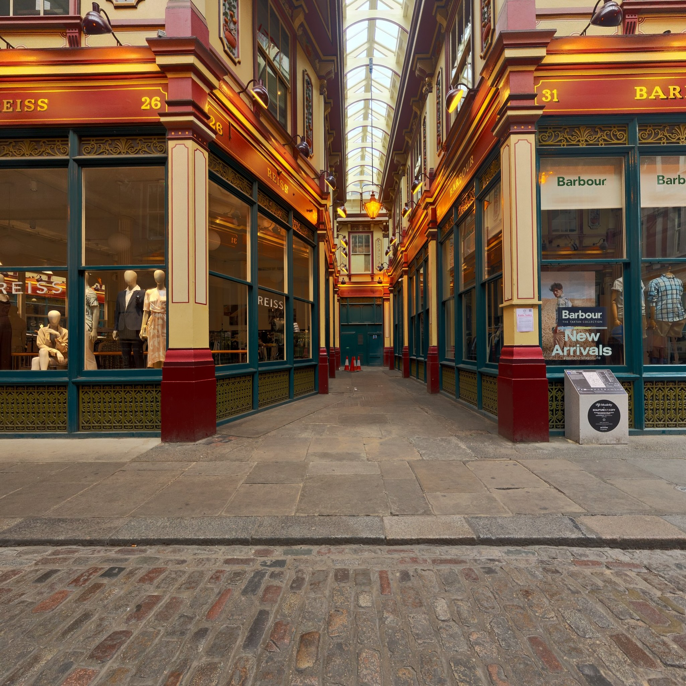
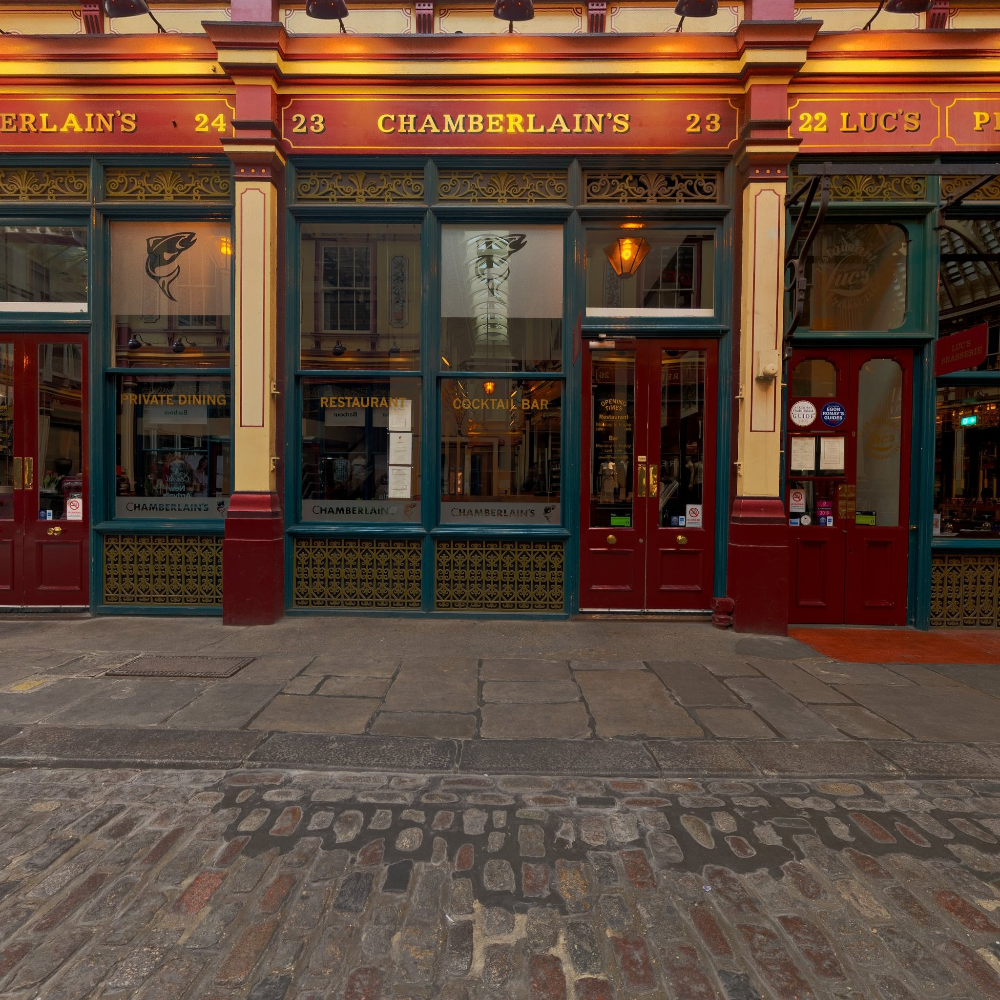
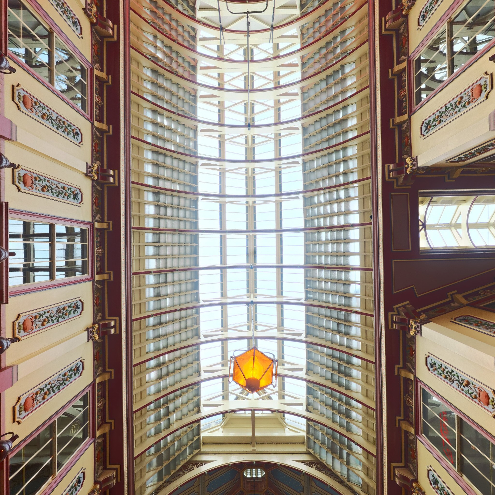
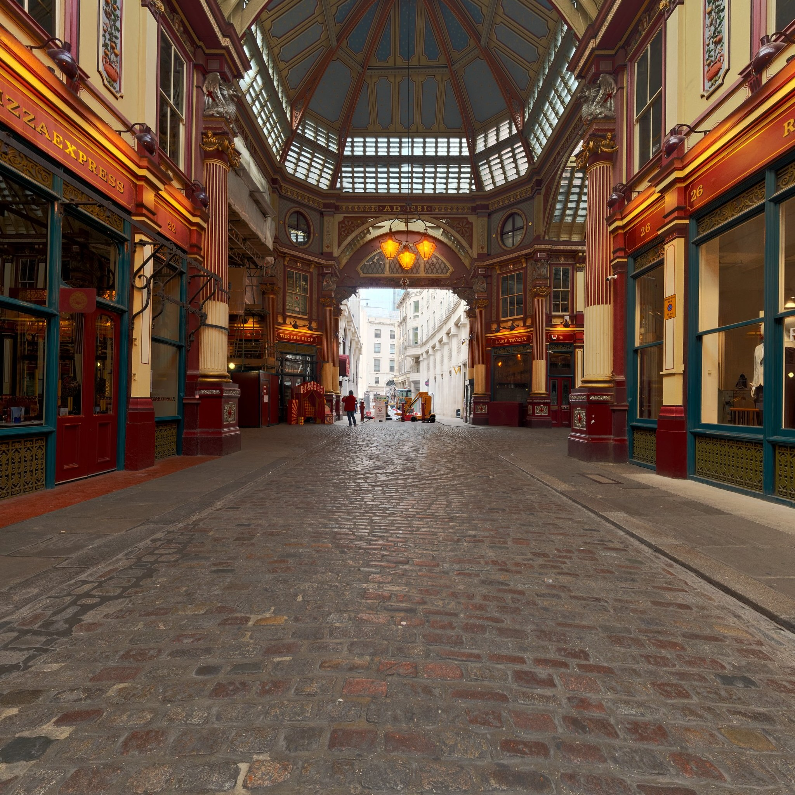
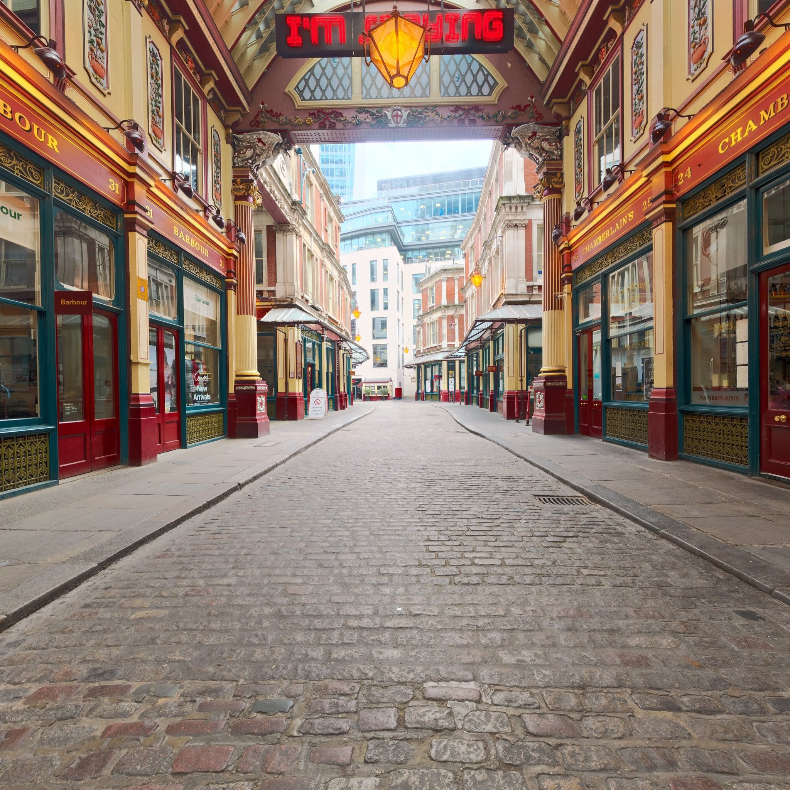
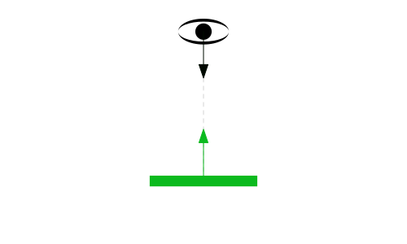
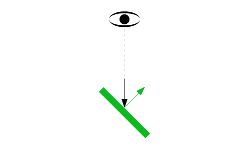
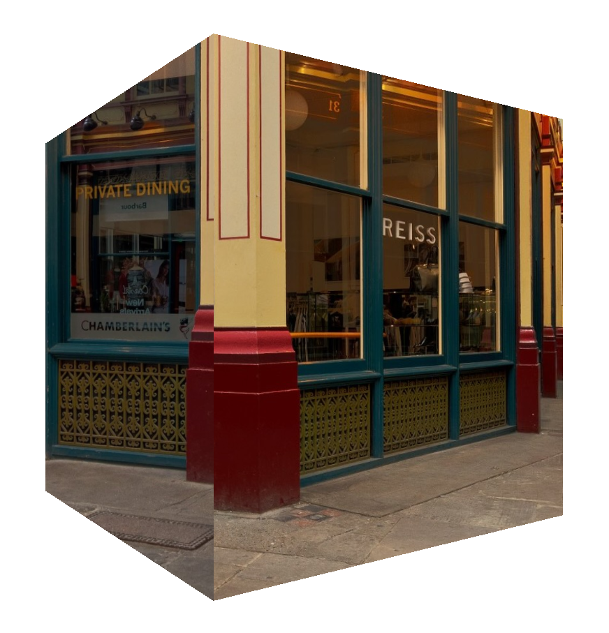

Environment Maps en WebGPU
Este artículo continúa desde el artículo sobre cubemaps. Este artículo también utiliza conceptos cubiertos en el artículo sobre iluminación. Si aún no has leído esos artículos, es posible que quieras leerlos primero.
Un environment map (mapa de entorno) representa el entorno de los objetos que estás dibujando. Si estás dibujando una escena al aire libre, representaría el exterior. Si estás dibujando personas en un escenario, representaría el lugar. Si estás dibujando una escena en el espacio exterior, serían las estrellas. Podemos implementar un environment map con un cubemap si tenemos 6 imágenes que muestren el entorno desde un punto en el espacio en las 6 direcciones del cubemap.
Aquí tienes un environment map del vestíbulo del Leadenhall Market en Londres.





Basándonos en el código del artículo anterior, vamos a cargar esas 6 imágenes en lugar de los lienzos (canvases) que generamos. Desde el artículo sobre importación de texturas, teníamos estas dos funciones. Una para cargar un ImageBitmap y otra para crear una textura a partir de una imagen.
async function loadImageBitmap(url) {
const res = await fetch(url);
const blob = await res.blob();
return await createImageBitmap(blob, { colorSpaceConversion: 'none' });
}
async function createTextureFromImage(device, url, options) {
const imgBitmap = await loadImageBitmap(url);
return createTextureFromSource(device, imgBitmap, options);
}
Añadamos una para cargar múltiples imágenes:
+ async function createTextureFromImages(device, urls, options) {
+ const imgBitmaps = await Promise.all(urls.map(loadImageBitmap));
+ return createTextureFromSource(device, imgBitmaps, options);
+ }
async function createTextureFromImage(device, url, options) {
- const imgBitmap = await loadImageBitmap(url);
- return createTextureFromSource(device, imgBitmap, options);
+ return createTextureFromImages(device, [url], options);
}
Ya que estábamos en ello, también cambiamos la función existente para usar la nueva. Ahora podemos usar la nueva para cargar las seis imágenes.
- const texture = await createTextureFromSources(
- device, faceCanvases, {mips: true, flipY: false});
+ const texture = await createTextureFromImages(
+ device,
+ [
+ 'resources/images/leadenhall_market/pos-x.jpg',
+ 'resources/images/leadenhall_market/neg-x.jpg',
+ 'resources/images/leadenhall_market/pos-y.jpg',
+ 'resources/images/leadenhall_market/neg-y.jpg',
+ 'resources/images/leadenhall_market/pos-z.jpg',
+ 'resources/images/leadenhall_market/neg-z.jpg',
+ ],
+ {mips: true, flipY: false},
+ );
En el fragment shader (shader de fragmentos), queremos saber, para cada fragmento a dibujar, dado un vector desde el ojo/cámara hasta esa posición en la superficie del objeto, en qué dirección se reflejará desde esa superficie. Luego podemos usar esa dirección para obtener un color del cubemap.
La fórmula para reflejar es:
reflectionDir = eyeToSurfaceDir –
2 ∗ dot(surfaceNormal, eyeToSurfaceDir) ∗ surfaceNormal
Pensando en lo que vemos, es cierto. Recuerda de los artículos de iluminación que el producto escalar (dot product) de 2 vectores devuelve el coseno del ángulo entre los 2 vectores. Sumar vectores nos da un nuevo vector, así que tomemos el ejemplo de un ojo mirando directamente perpendicular a una superficie plana.

Visualicemos la fórmula anterior. Primero recuerda que el producto escalar de 2 vectores que apuntan en direcciones exactamente opuestas es -1, así que visualmente:
Aplicando ese producto escalar con eyeToSurfaceDir y normal en la fórmula de reflexión nos da esto:
Donde multiplicar -2 por -1 lo convierte en 2 positivo.
Así que sumar los vectores conectándolos nos da el vector reflejado:

Podemos ver arriba que, dadas 2 normales, una cancela completamente la dirección desde el ojo y la segunda apunta la reflexión directamente de vuelta hacia el ojo. Lo cual, si lo ponemos de nuevo en el diagrama original, es exactamente lo que esperaríamos:
Rotemos la superficie 45 grados a la derecha.

El producto escalar de 2 vectores separados por 135 grados es -0.707:
Así que aplicando todo en la fórmula:
De nuevo, multiplicar 2 negativos nos da un positivo pero el vector es ahora un 30% más corto.

Sumar los vectores nos da el vector reflejado:
Lo cual, si lo ponemos de nuevo en el diagrama original, parece correcto.

Usamos esa dirección reflejada para mirar en el cubemap y colorear la superficie del objeto.
Aquí tienes un diagrama donde puedes configurar la rotación de la superficie y ver las diversas partes de la ecuación. También puedes ver que los vectores de reflexión apuntan a las diferentes caras del cubemap y afectan el color de la superficie.
Ahora que sabemos cómo funciona la reflexión y que podemos usarla para buscar valores del cubemap, cambiemos los shaders para hacer eso.
Primero, en el vertex shader (shader de vértices), calcularemos la posición del mundo y la normal orientada al mundo de los vértices y las pasaremos al fragment shader como variables inter-etapa (inter-stage variables). Esto es similar a lo que hicimos en el artículo sobre focos (spotlights).
struct Uniforms {
- matrix: mat4x4f,
+ projection: mat4x4f,
+ view: mat4x4f,
+ world: mat4x4f,
+ cameraPosition: vec3f,
};
struct Vertex {
@location(0) position: vec4f,
+ @location(1) normal: vec3f,
};
struct VSOutput {
@builtin(position) position: vec4f,
- @location(0) normal: vec3f,
+ @location(0) worldPosition: vec3f,
+ @location(1) worldNormal: vec3f,
};
@group(0) @binding(0) var<uniform> uni: Uniforms;
@group(0) @binding(1) var ourSampler: sampler;
@group(0) @binding(2) var ourTexture: texture_cube<f32>;
@vertex fn vs(vert: Vertex) -> VSOutput {
var vsOut: VSOutput;
- vsOut.position = uni.matrix * vert.position;
- vsOut.normal = normalize(vert.position.xyz);
+ vsOut.position = uni.projection * uni.view * uni.world * vert.position;
+ vsOut.worldPosition = (uni.world * vert.position).xyz;
+ vsOut.worldNormal = (uni.world * vec4f(vert.normal, 0)).xyz;
return vsOut;
}
Luego, en el fragment shader, normalizamos el worldNormal ya que se está interpolando a través de la superficie entre vértices. Basándonos en las matemáticas de matrices de el artículo sobre cámaras, podemos obtener la posición del mundo de la cámara obteniendo la 3ª fila de la matriz de vista y negándola, y restando eso de la posición del mundo de la superficie obtenemos el eyeToSurfaceDir.
Y finalmente usamos reflect, que es una función integrada de WGSL que implementa la fórmula que revisamos anteriormente. Usamos el resultado para obtener un color del cubemap.
@fragment fn fs(vsOut: VSOutput) -> @location(0) vec4f {
+ let worldNormal = normalize(vsOut.worldNormal);
+ let eyeToSurfaceDir = normalize(vsOut.worldPosition - uni.cameraPosition);
+ let direction = reflect(eyeToSurfaceDir, worldNormal);
- return textureSample(ourTexture, ourSampler, normalize(vsOut.normal));
+ return textureSample(ourTexture, ourSampler, direction);
}
También necesitamos normales reales para este ejemplo. Necesitamos normales reales para que las caras del cubo parezcan planas. En el ejemplo anterior, solo para ver el cubemap funcionar, reutilizamos las posiciones del cubo, pero en este caso necesitamos normales reales para un cubo como cubrimos en el artículo sobre iluminación.
const vertexData = new Float32Array([ - // front face - -1, 1, 1, - -1, -1, 1, - 1, 1, 1, - 1, -1, 1, - // right face - 1, 1, -1, - 1, 1, 1, - 1, -1, -1, - 1, -1, 1, - // back face - 1, 1, -1, - 1, -1, -1, - -1, 1, -1, - -1, -1, -1, - // left face - -1, 1, 1, - -1, 1, -1, - -1, -1, 1, - -1, -1, -1, - // bottom face - 1, -1, 1, - -1, -1, 1, - 1, -1, -1, - -1, -1, -1, - // top face - -1, 1, 1, - 1, 1, 1, - -1, 1, -1, - 1, 1, -1, + // posición | normales + //-------------+---------------------- + // cara frontal z positivo + -1, 1, 1, 0, 0, 1, + -1, -1, 1, 0, 0, 1, + 1, 1, 1, 0, 0, 1, + 1, -1, 1, 0, 0, 1, + // cara derecha x positivo + 1, 1, -1, 1, 0, 0, + 1, 1, 1, 1, 0, 0, + 1, -1, -1, 1, 0, 0, + 1, -1, 1, 1, 0, 0, + // cara trasera z negativo + 1, 1, -1, 0, 0, -1, + 1, -1, -1, 0, 0, -1, + -1, 1, -1, 0, 0, -1, + -1, -1, -1, 0, 0, -1, + // cara izquierda x negativo + -1, 1, 1, -1, 0, 0, + -1, 1, -1, -1, 0, 0, + -1, -1, 1, -1, 0, 0, + -1, -1, -1, -1, 0, 0, + // cara inferior y negativo + 1, -1, 1, 0, -1, 0, + -1, -1, 1, 0, -1, 0, + 1, -1, -1, 0, -1, 0, + -1, -1, -1, 0, -1, 0, + // cara superior y positivo + -1, 1, 1, 0, 1, 0, + 1, 1, 1, 0, 1, 0, + -1, 1, -1, 0, 1, 0, + 1, 1, -1, 0, 1, 0, ]);
Y, por supuesto, necesitamos cambiar nuestro pipeline para proporcionar las normales.
const pipeline = device.createRenderPipeline({
label: '2 attributes',
layout: 'auto',
vertex: {
module,
buffers: [
{
- arrayStride: (3) * 4, // (3) floats de 4 bytes cada uno
+ arrayStride: (3 + 3) * 4, // (6) floats de 4 bytes cada uno
attributes: [
{shaderLocation: 0, offset: 0, format: 'float32x3'}, // position
+ {shaderLocation: 1, offset: 12, format: 'float32x3'}, // normal
],
},
],
},
Como de costumbre, necesitamos configurar nuestro buffer de uniformes y sus vistas.
- // matrix
- const uniformBufferSize = (16) * 4;
+ // projection, view, world, cameraPosition, pad
+ const uniformBufferSize = (16 + 16 + 16 + 3 + 1) * 4;
const uniformBuffer = device.createBuffer({
label: 'uniforms',
size: uniformBufferSize,
usage: GPUBufferUsage.UNIFORM | GPUBufferUsage.COPY_DST,
});
const uniformValues = new Float32Array(uniformBufferSize / 4);
// offsets a los diversos valores de uniformes en índices float32
- const kMatrixOffset = 0;
- const matrixValue = uniformValues.subarray(kMatrixOffset, kMatrixOffset + 16);
const kProjectionOffset = 0;
const kViewOffset = 16;
const kWorldOffset = 32;
+ const projectionValue = uniformValues.subarray(kProjectionOffset, kProjectionOffset + 16);
+ const viewValue = uniformValues.subarray(kViewOffset, kViewOffset + 16);
+ const worldValue = uniformValues.subarray(kWorldOffset, kWorldOffset + 16);
+ const cameraPositionValue = uniformValues.subarray(
+ kCameraPositionOffset, kCameraPositionOffset + 3);
Y necesitamos establecerlos en el momento del renderizado.
const aspect = canvas.clientWidth / canvas.clientHeight;
mat4.perspective(
60 * Math.PI / 180,
aspect,
0.1, // zNear
10, // zFar
- matrixValue,
+ projectionValue,
);
+ cameraPositionValue.set([0, 0, 4]); // camera position;
const view = mat4.lookAt(
- [0, 1, 5], // camera position
+ cameraPositionValue,
[0, 0, 0], // target
[0, 1, 0], // up
+ viewValue,
);
- mat4.multiply(matrixValue, view, matrixValue);
- mat4.rotateX(matrixValue, settings.rotation[0], matrixValue);
- mat4.rotateY(matrixValue, settings.rotation[1], matrixValue);
- mat4.rotateZ(matrixValue, settings.rotation[2], matrixValue);
+ mat4.identity(worldValue);
+ mat4.rotateX(worldValue, time * -0.1, worldValue);
+ mat4.rotateY(worldValue, time * -0.2, worldValue);
// upload the uniform values to the uniform buffer
device.queue.writeBuffer(uniformBuffer, 0, uniformValues);
Cambiemos también el renderizado a un bucle rAF.
- const degToRad = d => d * Math.PI / 180;
-
- const settings = {
- rotation: [degToRad(20), degToRad(25), degToRad(0)],
- };
-
- const radToDegOptions = { min: -360, max: 360, step: 1, converters: GUI.converters.radToDeg };
-
- const gui = new GUI();
- gui.onChange(render);
- gui.add(settings.rotation, '0', radToDegOptions).name('rotation.x');
- gui.add(settings.rotation, '1', radToDegOptions).name('rotation.y');
- gui.add(settings.rotation, '2', radToDegOptions).name('rotation.z');
let depthTexture;
- function render() {
+ function render(time) {
+ time *= 0.001;
...
+ requestAnimationFrame(render);
+ }
+ requestAnimationFrame(render);
const observer = new ResizeObserver(entries => {
for (const entry of entries) {
const canvas = entry.target;
const width = entry.contentBoxSize[0].inlineSize;
const height = entry.contentBoxSize[0].blockSize;
canvas.width = Math.max(1, Math.min(width, device.limits.maxTextureDimension2D));
canvas.height = Math.max(1, Math.min(height, device.limits.maxTextureDimension2D));
- // re-render
- render();
}
});
observer.observe(canvas);
Y con eso obtenemos:
Si miras de cerca, podrías ver un pequeño problema.

Corrigiendo la dirección de reflexión
Nuestro cubo con un environment map aplicado representa un cubo espejado. Pero un espejo normalmente muestra las cosas invertidas horizontalmente. ¿Qué está pasando?
El problema es que estamos en el interior del cubo mirando hacia afuera, pero recuerda de el artículo anterior que cuando mapeamos texturas a cada lado del cubo, se mapeaban correctamente cuando se veían desde el exterior.
Otra forma de verlo es que, desde dentro del cubo, estamos en un “sistema de coordenadas de mano derecha con y hacia arriba”. Esto significa que el eje z positivo es hacia adelante. Mientras que todas nuestras matemáticas 3D hasta ahora utilizan un “sistema de coordenadas de mano izquierda con y hacia arriba” [1] donde el eje z negativo es hacia adelante. Una solución sencilla es invertir la coordenada Z cuando muestreamos la textura.
- return textureSample(ourTexture, ourSampler, direction); + return textureSample(ourTexture, ourSampler, direction * vec3f(1, 1, -1));
Ahora la reflexión está invertida, tal como en un espejo.
A continuación, mostremos cómo usar un cubemap para un skybox.
Encontrar y crear environment maps (cubemaps)
Puedes encontrar cientos de panoramas gratuitos en polyhaven.com. Descarga un archivo jpg o png de cualquiera de ellos (haz clic en el menú ≡ en la parte superior derecha). Luego, ve a esta página y arrastra y suelta el archivo .jpg o .png allí. Selecciona el tamaño y el formato que desees y haz clic en el botón para guardar las imágenes como caras del cubemap.
Para ser sincero, encuentro que hablar de sistemas de coordenadas “de mano izquierda” frente a “de mano derecha” es súper confuso y preferiría decir “+x a la derecha, +y arriba, -z adelante”, lo que no deja lugar a ambigüedades. Sin embargo, si quieres saber más, puedes buscarlo en Google 😄 ↩︎